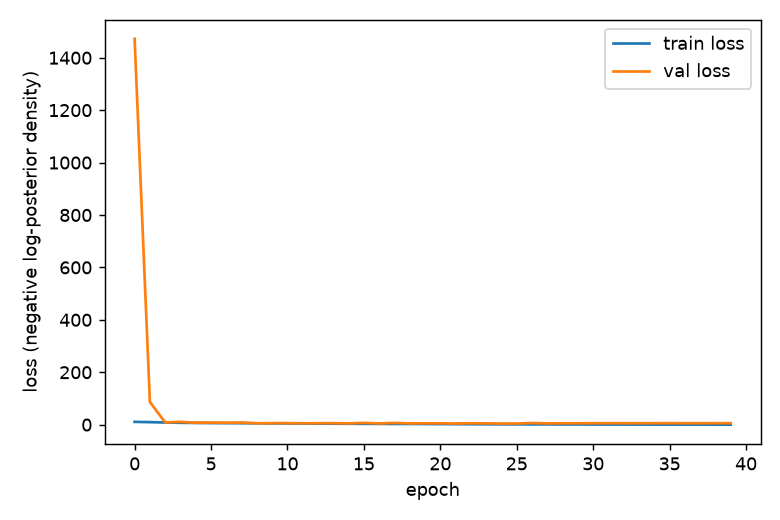
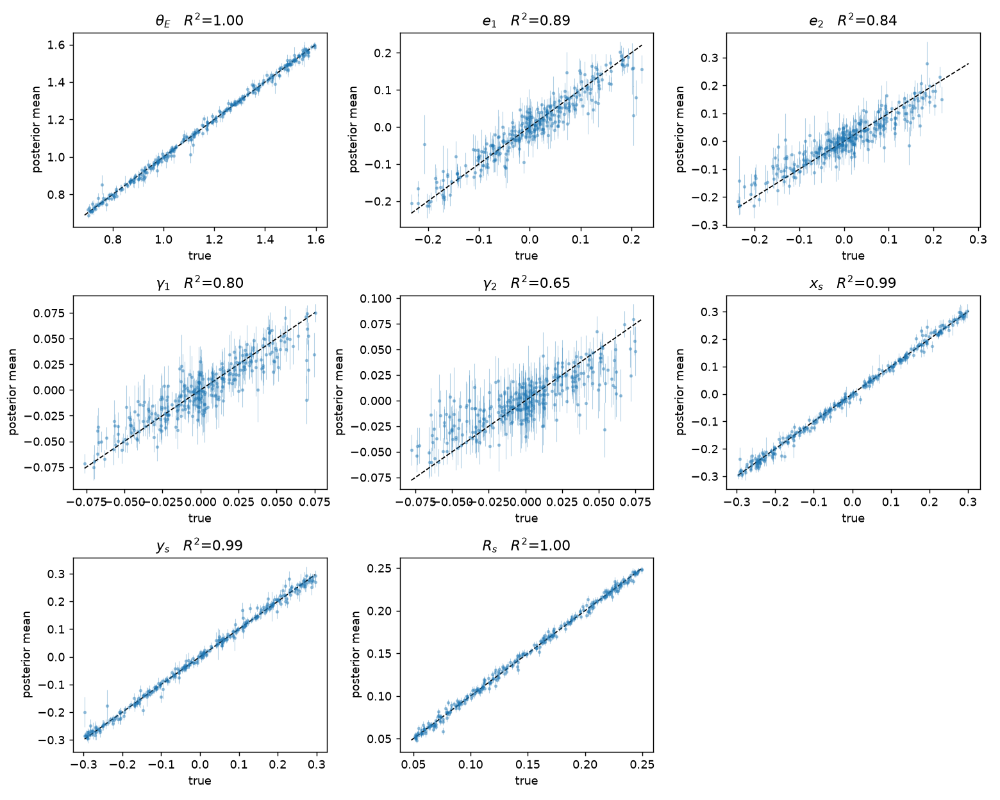
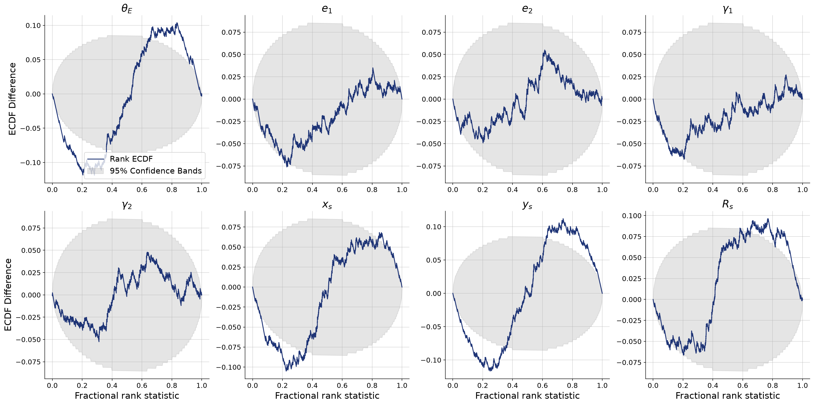
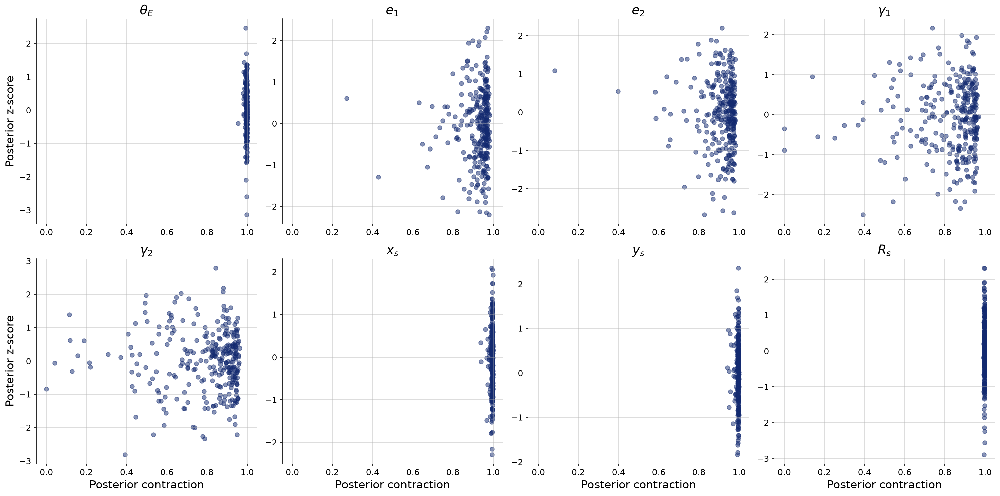
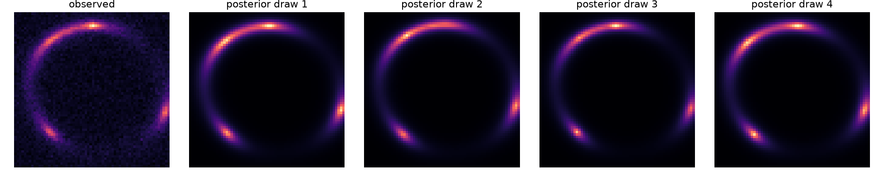
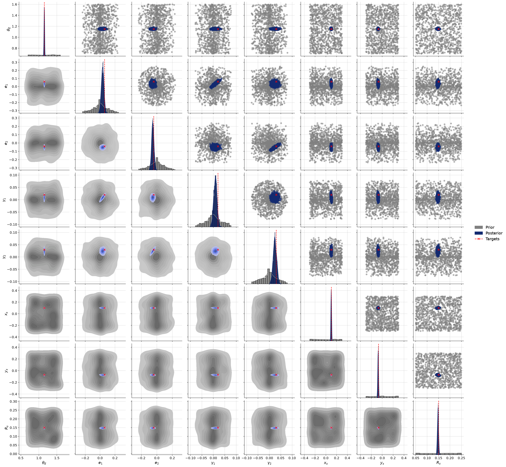
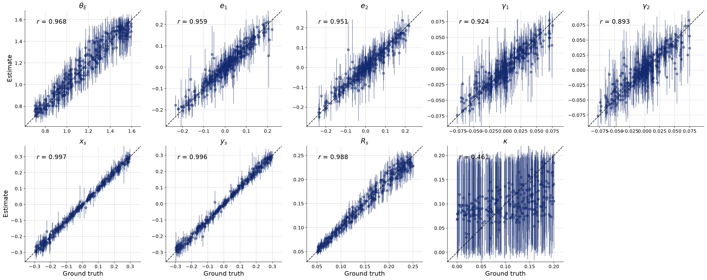

An amortized BayesFlow posterior estimator, trained on 50,000 lenstronomy simulations per model, evaluated for accuracy, calibration, information gain, and its handling of the mass-sheet degeneracy.
We train a neural network once on simulated images of strong gravitational lenses, and afterwards it can read off the full Bayesian posterior over 8–9 physical parameters for any new lens image in milliseconds — no per-image fitting, no MCMC. With the source brightness tuned to a realistic peak signal-to-noise ratio (median 16) and the training set raised to 50,000 simulations, the network recovers the Einstein radius, source position, and source size essentially perfectly (r = 0.999, R² = 1.00), the lens ellipticity accurately (R² = 0.92–0.94), and even the very weak external shear well (0.80–0.86). Simulation-based calibration finds honest uncertainties for ellipticity and shear and mildly conservative (slightly too wide, never overconfident) intervals for the best-measured parameters — a defect we show is a network-capacity effect, not a data effect.
As a stress test, we add an external convergence κ — a parameter that lensing theory says cannot be measured from image shapes alone (the mass-sheet degeneracy). The network correctly reports this: the κ posterior barely contracts from the prior (+16%), shows a −0.96 anti-correlation with the Einstein radius exactly along the theoretical degeneracy direction, and degrades θE recovery from R² = 1.00 to 0.94 while leaving every other parameter untouched.
When a massive foreground galaxy sits almost exactly between us and a distant background galaxy, its gravity bends the background light into arcs, multiple images, or a complete Einstein ring. The shape of that distorted image is not random — it encodes the physics of the lens:
The classical way to extract these numbers is to fit a lens model to each image with likelihood-based sampling (MCMC) — accurate, but often hours per system, repeated from scratch for every new image. Upcoming surveys (Euclid, LSST) will find 104–105 new lenses, so per-system MCMC does not scale. Amortized simulation-based inference inverts the cost structure: pay once to train a network on simulated (parameters, image) pairs, then get the posterior p(θ | image) for any new image in a single forward pass.
Two questions structure the analysis:
The project is a three-stage command-line pipeline (main.py), run once per
model variant:
| Stage | Command | What it does | Cost |
|---|---|---|---|
| Generate | python main.py generate |
Draws parameters from the priors, renders each lens image with lenstronomy, adds
noise, saves 52,300 (image, parameters) pairs to data/processed/ |
~1 min, 15 CPU workers |
| Train | python main.py train |
Trains the BayesFlow approximator (CNN summary network + conditional normalizing flow) on the 50,000-pair training split, with early stopping armed | ~2 h, GPU |
| Evaluate | python main.py evaluate |
Draws 2,000 posterior samples for each of 300 held-out systems and produces the recovery, calibration, contraction, posterior-predictive, and fiducial-inference diagnostics below | seconds |
The whole cycle was run twice overnight on 18 July 2026: Run 6 with
the 8-parameter model, and Run 7 with a 9th parameter, the external convergence
κ (enabled via SLI_INCLUDE_KAPPA=1).
Each simulated system is a singular isothermal ellipsoid (SIE) lens with external shear, magnifying a Sérsic-profile source galaxy. The inferred parameter vector is
θ = (θE, e1, e2, γ1, γ2, xs, ys, Rs) [ + κ in Run 7 ]
Nuisance quantities are fixed and assumed known, per the assignment specification: the lens centroid (measurable from the lens light), the source amplitude, the source Sérsic index (n = 2), and the source-light ellipticity.
Parameters are drawn from independent uniform priors. Ellipticity is sampled as an axis ratio q and position angle φ, then converted to (e1, e2); shear is sampled as a modulus and angle, then converted to (γ1, γ2) — guaranteeing every draw is physically valid, and producing the ring-shaped joint supports visible in the prior pairplot of the appendix figures.
| Parameter | Range | Meaning |
|---|---|---|
| θE | (0.7, 1.6)″ | Einstein radius |
| q | (0.6, 1.0) | lens axis ratio → (e1, e2) |
| φ | (0, π) | lens position angle |
| γext | (0, 0.08) | external shear modulus → (γ1, γ2) |
| φext | (0, π) | external shear angle |
| xs, ys | (−0.3, 0.3)″ | source position |
| Rs | (0.05, 0.25)″ | source half-light radius |
| κ | (0, 0.20) | external convergence — Run 7 only |
Table 1. Prior ranges. Lengths in arcseconds, angles in radians.
Images are rendered on a 64×64 grid at 0.05″/pixel (a 3.2″ field of view), convolved with a Gaussian PSF of FWHM 0.1″, then degraded with Gaussian background noise (σbkg = 0.1 per pixel) plus Poisson shot noise for a 100 s effective exposure, using lenstronomy’s noise utilities.
The assignment targets a realistic peak signal-to-noise ratio of 10–30. The original source amplitude (20) turned out far too faint — median peak SNR ≈ 4, arcs buried in noise. A sweep over 60 prior draws located the right amplitude:
| Source amplitude | min SNR | median SNR | max SNR | Verdict |
|---|---|---|---|---|
| 20 (original) | 1.0 | 3.8 | 5.5 | far below target |
| 60 | 2.7 | 8.9 | 12.1 | still short |
| 100 | 4.1 | 12.6 | 16.7 | low end of target |
| 150 (adopted) | 5.7 | 16.3 | 21.3 | in target range |
| 200 | 7.1 | 19.4 | 25.1 | also acceptable |
Table 2. SOURCE_AMP tuning sweep (peak SNR over 60 prior
draws). The adopted value 150 puts typical images squarely in the 10–30 target.
The realized SNR of the final 50,000-sample datasets confirms the tuning: Run 6 measured min 4.6 / median 16.1 / max 27.4; Run 7 measured min 2.3 / median 16.6 / max 27.5.
The precomputed dataset comprises 50,000 training, 2,000 validation, and 300 held-out test systems per variant — the upper half of the assignment’s 104–105 budget, reached in steps (8k → 20k → 50k; see Section 10). Because each simulation is independent, generation parallelizes almost perfectly: the full dataset takes about a minute on 15 CPU workers.
We use neural posterior estimation as implemented in BayesFlow: an amortized approximation qφ(θ | x) to the posterior is trained by maximizing the log-density of the true parameters under the model, across simulated pairs (θ, x) ~ p(θ) p(x | θ). No likelihood is ever evaluated — only the simulator is needed. Two networks are learned jointly:
The target parameters are standardized (z-scored) before entering the flow, since they span very different scales (θE ~ 1 vs. γi ~ 10−2).
The approximator is trained offline for 40 epochs, batch size 32, Adam optimizer at learning rate 10−3, with early stopping on the validation loss (patience 10, best weights restored) as a safeguard against the overfitting seen in the early 8,000-sample pilot. On the RTX 3060 each model trains in ~123 minutes at ~118 ms/step (the same step cost ~500 ms on CPU — the 4–5× GPU speedup is what made a 50k dataset practical).

| Epoch | Run 6 train | Run 6 validation | Run 7 train | Run 7 validation |
|---|---|---|---|---|
| 1 | 8.86 | 6.83 | 10.25 | 8.73 |
| 10 | −2.57 | −3.39 | −1.17 | −2.44 |
| 20 | −4.45 | −5.33 | −3.14 | −3.21 |
| 30 | −5.70 | −7.47 | −4.41 | −6.22 |
| 40 | −6.19 | −8.05 (best = final) | −4.93 | −6.79 (best = final) |
Table 3. Loss milestones. The loss is the negative log-posterior density of the true parameters, so lower is better and negative values are expected once the posterior sharpens beyond the prior. For comparison, the 20,000-sample run ended at −5.87.
For each of the 300 held-out test systems, 2,000 posterior samples are drawn and the posterior median is compared with the ground truth, with the median absolute deviation (MAD) as the error bar.

| Parameter | r (50k) | R² (50k) | R² (20k) | R² (8k, SNR≈4) |
|---|---|---|---|---|
| θE | 0.999 | 1.00 | 1.00 | 0.88 |
| Rs | 0.999 | 1.00 | 1.00 | 0.95 |
| xs | 0.999 | 1.00 | 0.99 | 0.83 |
| ys | 0.999 | 1.00 | 0.99 | 0.84 |
| e1 | 0.970 | 0.94 | 0.89 | 0.47 |
| e2 | 0.960 | 0.92 | 0.84 | 0.49 |
| γ1 | 0.928 | 0.86 | 0.80 | 0.21 |
| γ2 | 0.895 | 0.80 | 0.65 | 0.06 |
Table 4. Recovery accuracy across the three configurations of the same architecture. Raising the SNR (rightmost → middle) moved the weakly-imprinting parameters from unrecoverable to good; enlarging the dataset (middle → left) sharpened them further.
The recovery hierarchy follows the physics: parameters with large, direct morphological signatures (ring radius, arc position and thickness) are recovered essentially perfectly; the quadrupole imprint of ellipticity is clearly measurable at SNR 16; and even the external shear — whose modulus the prior caps at 0.08 and whose distortion is partially degenerate with ellipticity — is now well constrained.
Accuracy of the point estimate is not enough; the posterior width must also be statistically correct. Simulation-based calibration checks this: across the test set, the rank of the true value within its own posterior samples must be uniformly distributed. We plot the difference between the empirical rank CDF and the uniform CDF, with simultaneous 95% confidence bands.




Lensing theory contains a famous blind spot: adding a uniform convergence sheet κ while rescaling the (unobservable) source leaves the image almost unchanged. κ therefore cannot be measured from a single image — and a sound inference method must report that impossibility rather than hide it. We repeat the entire pipeline with κ ~ U(0, 0.2) as a ninth parameter, at identical SNR and dataset size.

| Configuration | Overfitting? | Shear recovery | Calibration |
|---|---|---|---|
| 8,000 samples, SNR ≈ 4 (Runs 1–3) | Yes — val loss degrades after epoch ~17 | R² 0.06–0.21 (unusable) | Overconfident (U-shaped ranks) — the dangerous direction |
| 20,000 samples, SNR ≈ 16 (Runs 4–5) | None | R² 0.65–0.80 | Mild underconfidence for θE, xs, ys, Rs |
| 50,000 samples, SNR ≈ 16 (Runs 6–7) | None (early stopping never fired) | R² 0.80–0.86 | Same mild underconfidence — unchanged by 2.5× more data |
Table 5. The progression cleanly separates the failure modes: SNR determines which parameters are learnable at all; dataset size fixed overfitting and sharpened recovery; the residual conservatism responds to neither — it is a capacity limit of the summary/inference networks.
Everything is deterministic given the seed in src/config.py (42). On a
machine with an NVIDIA GPU:
| Step | Command |
|---|---|
| Environment | python -m venv .venv && pip install -r requirements.txt |
| Run 6 (8 parameters) | python main.py generate && python main.py train && python main.py evaluate |
| Run 7 (+ κ) | same three commands with SLI_INCLUDE_KAPPA=1 set |
All figures land in figures/; per-run numbers are logged in
RESULTS.md. Companion documents: the formal report
(report/report.pdf), the from-zero beginner’s guide
(report/explanation.pdf), and the slide deck with speaker notes
(presentation/).